01 / OVERVIEW派系概览
无城游牧、伏击与兽群。 推荐首发领主：陶罗克斯。兽群石：建立兽群石产生恐惧值，解锁单位与增益；没有固定城市。
毁灭 · 游击 / 巨兽
兽群石：建立兽群石产生恐惧值，解锁单位与增益；没有固定城市。
为什么玩它
不用守城，伏击与机动爽快。
要注意什么
经济与补员依赖掠夺，容错低。
到处放兽群石，打游击；用大角兽 / 牛头人冲阵。
本页数值为 Patch 9.0.4 / Ultra 规模 / 0 级，不含科技、技能、装备、领主光环与战场增益。维护费是战役基础值，受难度、补给线与派系减免影响。中文兵种名为社区习惯译名，以游戏内简中为准。
02 / RECOMMENDED推荐兵种
每个派系挑 6 个最值得先练、先招、先知道的名字。不是“唯一答案”，但能覆盖扛线、输出、机动和攻城。
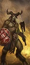
便宜、有盾，前期填线主力。
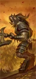
高破甲、高冲锋，正面撕开重甲。
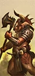
高破甲怪步，配合包抄。
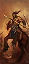
快速包抄、追逃。
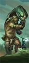
超远投石，能拆墙。
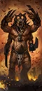
高血量高输出，吸引火力。
03 / ROSTER完整兵种表
按类别展开。T 是招募等级；兵模是单位里的模型数；远程 / 射程一栏，前者是每 10 秒全队伤害，后者是射程。名将团单独列在最后。
← 左右滑动查看完整数值 →
领主与传奇领主10 个单位
| 兵种 | T | 兵模 | 生命 | 护甲 | 领导 | 速度 | 近攻 | 近防 | 武器 | 远程 / 射程 | 维护 |
|---|---|---|---|---|---|---|---|---|---|---|---|
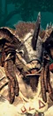 BeastlordLord |
— | 1 | 5,556 | 80 | 70 | 70 | 32 | 26 | 370 | — | — |
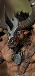 DoombullLord |
— | 1 | 6,668 | 100 | 80 | 64 | 47 | 38 | 460 | — | — |
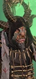 Great Bray-Shaman (Beasts)Wizard Lord |
— | 1 | 4,568 | 15 | 65 | 38 | 30 | 28 | 310 | — | — |
Great Bray-Shaman (Death)Wizard Lord |
— | 1 | 4,568 | 15 | 65 | 38 | 30 | 28 | 310 | — | — |
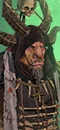 Great Bray-Shaman (Shadows)Wizard Lord |
— | 1 | 4,568 | 15 | 65 | 38 | 30 | 28 | 310 | — | — |
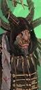 Great Bray-Shaman (Wild)Wizard Lord |
— | 1 | 4,568 | 15 | 65 | 38 | 30 | 28 | 310 | — | — |
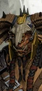 Khazrak the One-EyeLord |
— | 1 | 5,788 | 100 | 75 | 70 | 34 | 28 | 390 | — | — |
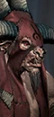 Malagor the Dark OmenWizard Lord |
— | 1 | 4,972 | 15 | 65 | 110 | 50 | 45 | 400 | — | — |
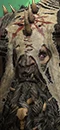 Morghur the ShadowgaveLord |
— | 1 | 6,092 | 15 | 75 | 39 | 55 | 45 | 400 | — | — |
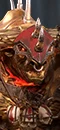 Taurox the Brass BullLord |
— | 1 | 7,368 | 130 | 80 | 64 | 53 | 47 | 500 | — | — |
英雄6 个单位
| 兵种 | T | 兵模 | 生命 | 护甲 | 领导 | 速度 | 近攻 | 近防 | 武器 | 远程 / 射程 | 维护 |
|---|---|---|---|---|---|---|---|---|---|---|---|
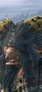 Bray-Shaman (Beasts)Wizard |
— | 1 | 4,472 | 80 | 55 | 70 | 28 | 24 | 280 | — | — |
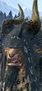 Bray-Shaman (Death)Wizard |
— | 1 | 4,472 | 80 | 55 | 70 | 28 | 24 | 280 | — | — |
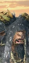 Bray-Shaman (Shadows)Wizard |
— | 1 | 4,472 | 80 | 55 | 70 | 28 | 24 | 280 | — | — |
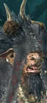 Bray-Shaman (Wild)Wizard |
— | 1 | 4,472 | 80 | 55 | 70 | 28 | 24 | 280 | — | — |
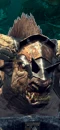 GorebullMelee Specialist |
— | 1 | 5,868 | 100 | 75 | 64 | 34 | 32 | 460 | — | — |
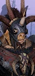 WargorMelee Specialist |
— | 1 | 4,056 | 80 | 65 | 38 | 50 | 40 | 400 | — | — |
近战步兵10 个单位
| 兵种 | T | 兵模 | 生命 | 护甲 | 领导 | 速度 | 近攻 | 近防 | 武器 | 远程 / 射程 | 维护 |
|---|---|---|---|---|---|---|---|---|---|---|---|
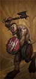 Ungor HerdAxe Infantry |
T1 | 160 | 8,960 | 15 | 54 | 36 | 22 | 24 | 27 | — | — |
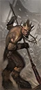 Ungor Spearmen HerdSpear Infantry |
T1 | 160 | 8,960 | 15 | 54 | 36 | 20 | 22 | 22 | — | — |
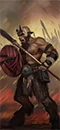 Ungor Spearmen Herd (Shields)Spear Infantry |
T1 | 160 | 8,960 | 15 | 54 | 36 | 20 | 30 | 22 | — | — |
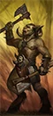 Gor HerdAxe Infantry |
T2 | 120 | 9,600 | 15 | 62 | 38 | 36 | 25 | 40 | — | — |
Gor Herd (Shields)Axe Infantry |
T2 | 120 | 9,600 | 15 | 62 | 38 | 26 | 35 | 30 | — | — |
 KhorngorsHalberd Infantry |
T2 | 120 | 9,600 | 60 | 62 | 38 | 18 | 26 | 28 | — | — |
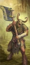 PestigorsGreat Axe Infantry |
T2 | 120 | 10,560 | 25 | 62 | 38 | 24 | 25 | 32 | — | — |
SlaangorsDual Sword Infantry |
T2 | 120 | 9,000 | 30 | 62 | 50 | 34 | 26 | 36 | — | — |
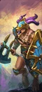 TzaangorsAxe Infantry |
T2 | 120 | 9,600 | 50 | 62 | 38 | 26 | 38 | 30 | — | — |
Bestigor HerdGreat Axe Infantry |
T3 | 100 | 10,000 | 95 | 70 | 38 | 35 | 30 | 44 | — | — |
远程步兵2 个单位
| 兵种 | T | 兵模 | 生命 | 护甲 | 领导 | 速度 | 近攻 | 近防 | 武器 | 远程 / 射程 | 维护 |
|---|---|---|---|---|---|---|---|---|---|---|---|
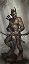 Ungor RaidersMissile Infantry |
T1 | 120 | 6,360 | 15 | 45 | 36 | 20 | 18 | 26 | 14 / 115m | — |
CygorSpecialist Artillery |
T3 | 1 | 9,800 | 50 | 75 | 39 | 44 | 25 | 470 | 407 / 400m | — |
怪步 / 飞行步兵5 个单位
| 兵种 | T | 兵模 | 生命 | 护甲 | 领导 | 速度 | 近攻 | 近防 | 武器 | 远程 / 射程 | 维护 |
|---|---|---|---|---|---|---|---|---|---|---|---|
 HarpiesFlying Melee Infantry |
T2 | 60 | 5,220 | 15 | 52 | 82 | 22 | 38 | 44 | — | — |
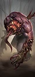 Chaos SpawnMonstrous Infantry |
T3 | 16 | 8,768 | 10 | 100 | 42 | 36 | 28 | 150 | — | — |
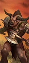 MinotaursMonstrous Infantry |
T3 | 16 | 8,704 | 35 | 75 | 62 | 34 | 32 | 110 | — | — |
Minotaurs (Great Weapons)Monstrous Infantry |
T3 | 16 | 8,704 | 35 | 75 | 62 | 34 | 32 | 110 | — | — |
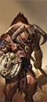 Minotaurs (Shields)Monstrous Infantry |
T3 | 16 | 8,704 | 45 | 75 | 62 | 34 | 45 | 110 | — | — |
近战骑兵4 个单位
| 兵种 | T | 兵模 | 生命 | 护甲 | 领导 | 速度 | 近攻 | 近防 | 武器 | 远程 / 射程 | 维护 |
|---|---|---|---|---|---|---|---|---|---|---|---|
CentigorsBestial Cavalry |
T2 | 60 | 6,720 | 35 | 60 | 84 | 24 | 28 | 32 | — | — |
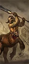 Centigors (Great Weapons)Bestial Cavalry Great Weapons |
T2 | 60 | 6,720 | 35 | 60 | 84 | 22 | 22 | 34 | — | — |
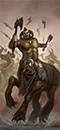 Centigors (Throwing Axes)Bestial Missile Cavalry |
T2 | 60 | 5,880 | 35 | 60 | 84 | 22 | 20 | 32 | 28 / 70m | — |
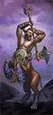 Centigors of TzeentchBestial Cavalry Great Weapons |
T2 | 60 | 6,720 | 35 | 60 | 84 | 22 | 22 | 34 | — | — |
怪骑1 个单位
| 兵种 | T | 兵模 | 生命 | 护甲 | 领导 | 速度 | 近攻 | 近防 | 武器 | 远程 / 射程 | 维护 |
|---|---|---|---|---|---|---|---|---|---|---|---|
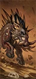 Razorgor HerdMonstrous Beast |
T2 | 32 | 6,176 | 45 | 55 | 70 | 24 | 18 | 52 | — | — |
战车2 个单位
| 兵种 | T | 兵模 | 生命 | 护甲 | 领导 | 速度 | 近攻 | 近防 | 武器 | 远程 / 射程 | 维护 |
|---|---|---|---|---|---|---|---|---|---|---|---|
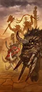 Tuskgor ChariotsChariot |
T2 | 4 | 5,736 | 80 | 60 | 70 | 28 | 24 | 42 | — | — |
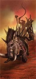 Razorgor ChariotsMonstrous Chariot |
T3 | 4 | 6,144 | 100 | 70 | 70 | 34 | 30 | 70 | — | — |
战兽2 个单位
| 兵种 | T | 兵模 | 生命 | 护甲 | 领导 | 速度 | 近攻 | 近防 | 武器 | 远程 / 射程 | 维护 |
|---|---|---|---|---|---|---|---|---|---|---|---|
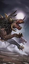 Chaos WarhoundsWar Beasts |
T1 | 80 | 6,080 | 15 | 38 | 95 | 26 | 17 | 22 | — | — |
 Chaos Warhounds (Poison)War Beasts |
T1 | 80 | 6,080 | 15 | 38 | 95 | 26 | 17 | 22 | — | — |
巨兽10 个单位
| 兵种 | T | 兵模 | 生命 | 护甲 | 领导 | 速度 | 近攻 | 近防 | 武器 | 远程 / 射程 | 维护 |
|---|---|---|---|---|---|---|---|---|---|---|---|
 Feral ManticoreFlying Monster |
T2 | 1 | 5,103 | 45 | 56 | 85 | 40 | 34 | 445 | — | — |
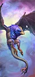 CockatriceFlying Monster |
T3 | 1 | 6,120 | 35 | 60 | 90 | 46 | 38 | 420 | — | — |
GiantMonster |
T3 | 1 | 12,620 | 50 | 100 | 39 | 65 | 30 | 700 | — | — |
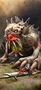 Giant Spined Chaos BeastMonster |
T3 | 1 | 6,780 | 60 | 70 | 75 | 49 | 27 | 440 | — | — |
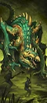 BasiliskSupport Monster |
T4 | 1 | 7,800 | 70 | 65 | 82 | 42 | 44 | 480 | — | — |
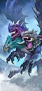 ChimeraFlying Monster |
T4 | 1 | 6,390 | 80 | 60 | 85 | 52 | 38 | 520 | — | — |
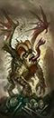 JabberslytheMonster |
T4 | 1 | 9,220 | 60 | 75 | 65 | 36 | 42 | 450 | — | — |
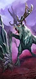 PreytonFlying Monster |
T4 | 1 | 7,289 | 60 | 70 | 90 | 50 | 28 | 485 | — | — |
GhorgonMonster |
T5 | 1 | 10,888 | 50 | 80 | 64 | 57 | 34 | 520 | — | — |
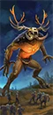 Incarnate Elemental of BeastsMonster |
T5 | 1 | 9,008 | 50 | 80 | 60 | 62 | 30 | 650 | — | — |
名将团12 个单位
| 兵种 | T | 兵模 | 生命 | 护甲 | 领导 | 速度 | 近攻 | 近防 | 武器 | 远程 / 射程 | 维护 |
|---|---|---|---|---|---|---|---|---|---|---|---|
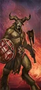 Black-Horn's Ravagers (Gor Herd – Shields)Axe Infantry · Renown |
T2 | 120 | 9,600 | 35 | 72 | 38 | 34 | 44 | 30 | — | 188 |
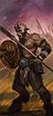 Destroyers of the Drakwald (Ungor Spearmen Herd – Shields)Spear Infantry · Renown |
T2 | 160 | 8,960 | 15 | 64 | 36 | 27 | 47 | 22 | — | 144 |
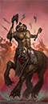 Groghooves of Wolf's Run (Centigors – Throwing Axes)Bestial Missile Cavalry · Renown |
T3 | 60 | 5,880 | 35 | 70 | 84 | 29 | 27 | 32 | 28 / 70m | 275 |
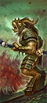 Khorrok's Manrippers (Bestigor Herd)Halberd Infantry · Renown |
T3 | 100 | 10,000 | 95 | 80 | 38 | 44 | 42 | 42 | — | 325 |
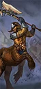 Sons of Ghorros (Centigors – Great Weapons)Bestial Cavalry Great Weapons · Renown |
T3 | 60 | 6,720 | 70 | 70 | 84 | 29 | 29 | 34 | — | 300 |
Bane of Wittengast (Giant Spined Chaos Beast)Monster · Renown |
T4 | 1 | 6,780 | 60 | 80 | 75 | 60 | 35 | 440 | — | — |
Bloodshriek Chimera (Chimera)Flying Monster · Renown |
T4 | 1 | 6,390 | 80 | 70 | 85 | 64 | 48 | 520 | — | — |
Butchers of Kalkengard (Minotaurs – Shields)Monstrous Infantry · Renown |
T4 | 16 | 8,704 | 45 | 85 | 62 | 43 | 56 | 110 | — | 400 |
Scourge of Arden (Preyton)Flying Monster · Renown |
T4 | 1 | 7,289 | 60 | 80 | 90 | 61 | 36 | 530 | — | — |
The Eye of Morrslieb (Cygor)Specialist Artillery · Renown |
T4 | 1 | 9,800 | 50 | 85 | 39 | 54 | 32 | 470 | 407 / 400m | 475 |
 The Bloodbrute Behemoth (Ghorgon)Monster · Renown |
T5 | 1 | 10,888 | 70 | 90 | 64 | 69 | 38 | 520 | — | 638 |
The Vorbergland Broodmother (Jabberslythe)Monster · Renown |
T5 | 1 | 9,220 | 60 | 85 | 65 | 45 | 52 | 450 | — | 525 |
已排除“扩展名册（extended roster）”单位。数值为 Patch 9.0.4；不同版本可能微调。
04 / ARMY BUILD配兵思路
先按角色填槽，再按对手换兵。下面是一个通用的 20 槽骨架，以及用本页推荐兵种拼出的示例。
| 角色 | 建议槽位 | 说明 |
|---|---|---|
| 扛线 | 5–6 | 持盾 / 重甲步兵，任务是站住，不是杀敌。 |
| 远程 | 3–5 | 弓箭、火枪或炮兵；至少 2 队能打重甲。 |
| 机动 | 3–4 | 骑兵、战车、飞行单位；包抄、背冲、追逃。 |
| 巨兽 / 炮兵 | 1–3 | 破阵、斩将、攻城；别孤军深入。 |
| 英雄 | 1–3 | 法师 + 支援英雄，嵌入主力。 |
示例：4× 角兽群（盾） + 2× 大角兽群 + 4× 独眼巨人 + 3× 半人马 + 2× 戈尔贡 + 领主 + 1 英雄，余下 3–4 槽按对手补破甲 / 反大型 / 炮兵。
重甲多带破甲（火枪、大炮、巨斧）；巨兽多带反大型（长戟、弩炮）；鼠人 / 绿皮多带范围伤害（吹息、炮兵、火焰）；骑兵多留 2 队长戟或反大型。不要一套配兵打到底。